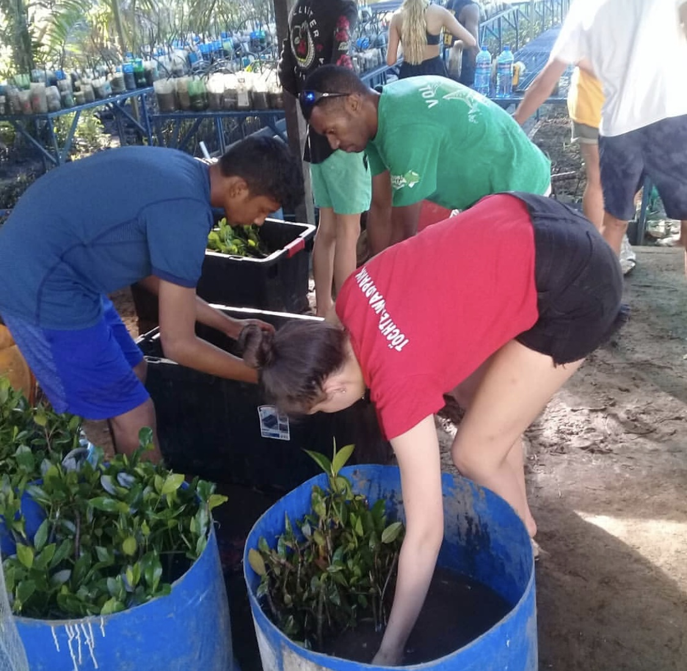
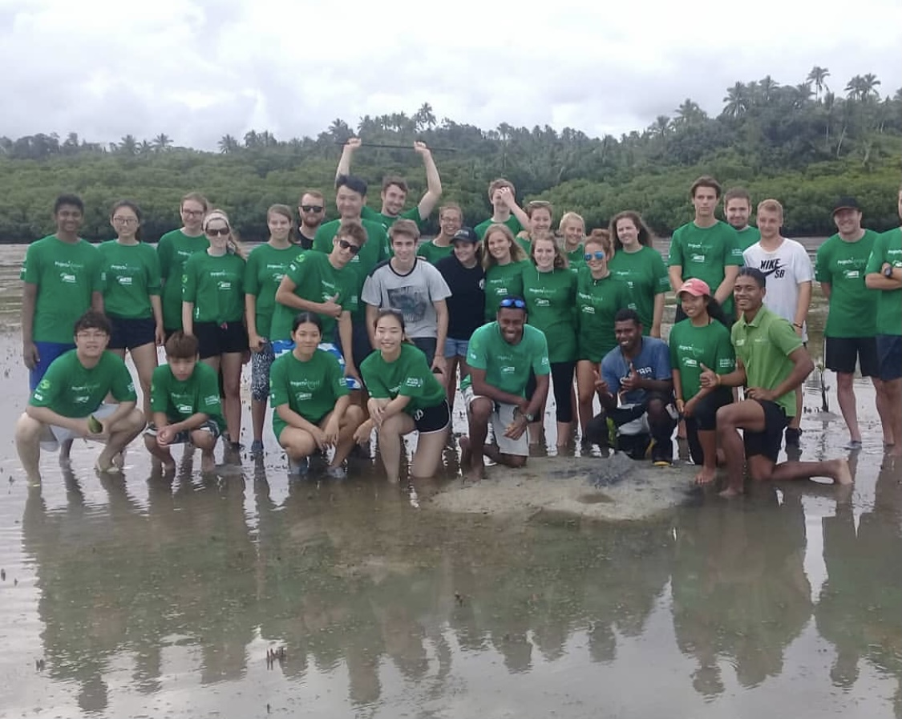

Global warming and the rise of ocean waters affecting animals is a commonly discussed issue. The poster animal for this issue is obviously Polar Bears. This is because the impacts on polar bears are visually easy to see; as ice caps are meling, the ground beneath polar bears feets is literally dissapearing.
Yet, we can't really go see this happening, and there is no immediate solution to this issue. Saving the ice caps from melting is a process of working against global warming as a whole. However, each person can make their own individual contributions.
As explained previously, as someone who loves the ocean, I also love aquatic wildlife. My best diving experience was in Thailand, where I got to swim with whalesharks out in the open ocean. They are huge animals but some of the most peaceful ones to exist.
I would hope that in the future, people have the same opportunities to encounter aquatic animals that they may like. In order for that to be possible, we must protect them and their habitats.
In the summer of 2018, I signed up for a social project in Fiji, travelled 40 hours and lived in a hostel with 8 other girls for 2 weeks. Every day, we did projects to help the community and save wildlife habitats in the area.
During those 2 weeks, we did wildlife research, beach cleanings for trash, helping beached animals, teach elementary students about environmental protection and prepare and plant mangrove trees for deteriorating shark habitats.
To plant the mangrove trees, we had to prepare and sprout the seedilings. Then, we took them to the shallow muddy area's of the Fiji ocean, and planted them by digging holes in the mud. We did this to create a new habitat for sharks to give birth, since most of the trees in the area had died.